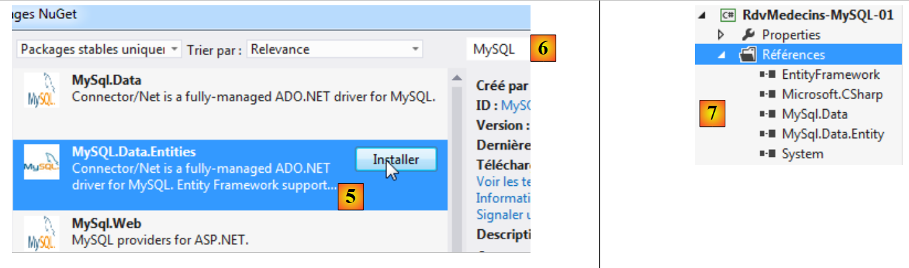
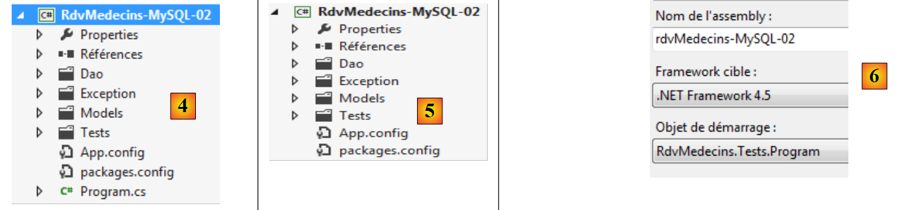

4. 基于 MySQL 5.5.28 的案例研究
4.1. 工具安装
需要安装的工具如下：
- SGBD：[http://dev.mysql.com/downloads/]；
- 一个管理工具：EMS SQL Manager for MySQL Freeware [http://www.sqlmanager.net/fr/products/mysql/manager/download]。
在下面的示例中，root 用户的密码为 root。
启动 MySQL5。此处，我们通过 Windows 服务窗口 [1] 进行操作。在 [2] 中，SGBD 已被启动。
 |
现在我们启动 [SQL Manager Lite for MySQL] 工具，用于管理 SGBD 和 [3]。
 |
- 在 [4] 中，我们创建一个新数据库；
- 在 [5] 中，指定数据库名称；
 |
- 在 [5] 中，以 root / root 身份登录；
- 在 [6] 中，确认将要执行的 SQL 命令；
 |
- 在 [7] 中，数据库已创建。现在必须将其保存到 [EMS Manager] 中。信息正确。执行 [OK]；
- 在 [8] 中，我们登录该数据库；
- 在 [9] 中，[EMS Manager] 显示了该数据库，目前为空。
现在我们将一个2012版的VS项目连接到该数据库。
4.2. 基于实体创建数据库
我们创建以下 2012 版控制台项目 VS、[RdvMedecins-MySQL-01] 和 [1]：
 |
- 在 [2] 中，通过 NuGet 向项目添加引用；
 |
- 在 [3] 中，添加引用 EF 5；
- 在 [4] 中，该引用现已包含在引用列表中；
 |
- 在 [5] 中，再次重复此操作，这次添加的是 [MySQL.Data.Entities]，它是一个用于 Entity Framework 的 ADO.NET 连接器。 要查找该包，可借助搜索框输入 [6]；
- 在 [7] 中，出现了两个引用 [MySQL.Data.Entities] 和 [MySQL.Data]，后者是前者的依赖项。
现在，我们将基于项目 [RdvMedecins-SqlServer-01] 构建项目 [RdvMedecins-MySQL-01]。
 |
- 在 [1] 中，复制所选元素；
- 在 [2] 中，将其粘贴到项目 [RdvMedecins-MySQL-01] 中；
- 在 [3] 中，由于有多个程序使用 [Main] 方法，我们需要指定项目的启动项目。
至此，项目生成应已成功。现在，我们将修改配置文件 [App.config]（该文件配置了数据库连接字符串）以及 DbProviderFactory。修改后内容如下：
<?xml version="1.0" encoding="utf-8"?>
<configuration>
<configSections>
<!-- 有关 Entity Framework 配置的更多信息，请访问 http://go.microsoft.com/fwlink/?LinkID=237468 -->
<section name="entityFramework" type="System.Data.Entity.Internal.ConfigFile.EntityFrameworkSection, EntityFramework, Version=5.0.0.0, Culture=neutral, PublicKeyToken=b77a5c561934e089" requirePermission="false" />
</configSections>
<startup>
<supportedRuntime version="v4.0" sku=".NETFramework,Version=v4.5" />
</startup>
<entityFramework>
<defaultConnectionFactory type="System.Data.Entity.Infrastructure.SqlConnectionFactory, EntityFramework" />
</entityFramework>
<!-- 连接字符串-->
<connectionStrings>
<add name="monContexte"
connectionString="Server=localhost;Database=rdvmedecins-ef;Uid=root;Pwd=root;"
providerName="MySql.Data.MySqlClient" />
</connectionStrings>
<!-- 工厂提供程序 -->
<system.data>
<DbProviderFactories>
<add name="MySQL Data Provider" invariant="MySql.Data.MySqlClient" description=".Net Framework Data Provider for MySQL"
type="MySql.Data.MySqlClient.MySqlClientFactory, MySql.Data, Version=6.5.4.0, Culture=neutral, PublicKeyToken=C5687FC88969C44D"
/>
</DbProviderFactories>
</system.data>
</configuration>
- 第 17 行：连接我们创建的 MySQL 和 [rdvmedecins-ef] 数据库的连接字符串；
- 第 24 行：版本号必须与项目 [1] 中参考编号 [MySql.Data] 的版本号一致：
 |
文件 [Entites.cs] 中也有一些配置，其中指定了表的名称及其所属的模式。该模式可能因 SGBD 而异。本例中即属此情况，此处将不使用模式。 文件 [Entites.cs] 的内容如下：
[Table("MEDECINS")]
public class Medecin : Personne
{...}
[Table("CLIENTS")]
public class Client : Personne
{...}
[Table("CRENEAUX")]
public class Creneau
{...}
[Table("RVS")]
public class Rv
{...}
运行程序 [CreateDB_01] [2]。得到以下异常：
同一错误出现了四次（第2-5行）。类型rowversion让人联想到实体中带有注释[Timestamp]的字段：
[Column("TIMESTAMP")]
[Timestamp]
public byte[] Timestamp { get; set; }
我们决定将这三行替换为以下内容：
[ConcurrencyCheck]
[Column("VERSIONING")]
public DateTime? Versioning { get; set; }
我们将该列的类型从 byte[] 更改为 DateTime?。 之所以这样做，是因为 MySQL 的类型为 [TIMESTAMP]（表示日期/时间），而具有该类型的列在每次更新行时都会被 MySQL 自动更新。这将有助于我们管理并发访问。
注解 [Timestamp] 仅适用于字节数组（byte[]）类型的列。我们将它替换为注解 [ConcurrencyCheck]。这两个注解都能管理并发访问。我们对这四个实体都进行此操作，然后重新运行应用程序。 随后出现以下错误：
第 1 行指出由 MySQL 调用的 SQL 存在语法错误。 由于该错误并非由我们生成，而是由 MySQL 的提供程序 ADO.NET 引发的，因此我们无法修正此问题。不过，我们可以看到下方已创建了 [1] 表：
 |
- 在 [2] 中，可以看到 [clients] 和 [3] 表的结构。
生成的数据库需要进行多项修改：
- [VERSIONING] 列的类型不合适。应将其类型改为 MySQL [TIMESTAMP]；
- 需注意表 [rvs] 具有唯一性约束，但本次生成未创建该约束；
- SQL Server 的连接器 ADO.NET 已通过子句 ON DELETE CASCADE 生成了外键。 而 ADO.NET 连接器（来自 MySQL）则未生成。
因此，我们需要像处理 SQL Server 时那样，修改生成的数据库。本文不展示具体修改方法，仅提供数据库创建脚本：
# SQL Manager Lite for MySQL 5.3.0.2
# ---------------------------------------
# 主机 ：localhost
# 端口 : 3306
# 数据库：rdvmedecins-ef
/*!40101 SET @OLD_CHARACTER_SET_CLIENT=@@CHARACTER_SET_CLIENT */;
/*!40101 SET @OLD_CHARACTER_SET_RESULTS=@@CHARACTER_SET_RESULTS */;
/*!40101 SET @OLD_COLLATION_CONNECTION=@@COLLATION_CONNECTION */;
/*!40101 SET NAMES utf8 */;
SET FOREIGN_KEY_CHECKS=0;
USE `rdvmedecins-ef`;
#
# `clients` 表的结构：
#
CREATE TABLE `clients` (
`ID` INTEGER(11) NOT NULL AUTO_INCREMENT,
`NOM` VARCHAR(30) COLLATE utf8_general_ci NOT NULL,
`PRENOM` VARCHAR(30) COLLATE utf8_general_ci NOT NULL,
`TITRE` VARCHAR(5) COLLATE utf8_general_ci NOT NULL,
`VERSIONING` TIMESTAMP NOT NULL ON UPDATE CURRENT_TIMESTAMP DEFAULT CURRENT_TIMESTAMP,
PRIMARY KEY USING BTREE (`ID`) COMMENT ''
)ENGINE=InnoDB
AUTO_INCREMENT=96 AVG_ROW_LENGTH=4096 CHARACTER SET 'utf8' COLLATE 'utf8_general_ci'
COMMENT=''
;
#
# `medecins` 表的结构：
#
CREATE TABLE `medecins` (
`ID` INTEGER(11) NOT NULL AUTO_INCREMENT,
`NOM` VARCHAR(30) COLLATE utf8_general_ci NOT NULL,
`PRENOM` VARCHAR(30) COLLATE utf8_general_ci NOT NULL,
`TITRE` VARCHAR(5) COLLATE utf8_general_ci NOT NULL,
`VERSIONING` TIMESTAMP NOT NULL ON UPDATE CURRENT_TIMESTAMP DEFAULT CURRENT_TIMESTAMP,
PRIMARY KEY USING BTREE (`ID`) COMMENT ''
)ENGINE=InnoDB
AUTO_INCREMENT=56 AVG_ROW_LENGTH=4096 CHARACTER SET 'utf8' COLLATE 'utf8_general_ci'
COMMENT=''
;
#
# `creneaux` 表的结构：
#
CREATE TABLE `creneaux` (
`ID` INTEGER(11) NOT NULL AUTO_INCREMENT,
`HDEBUT` INTEGER(11) NOT NULL,
`MDEBUT` INTEGER(11) NOT NULL,
`HFIN` INTEGER(11) NOT NULL,
`MFIN` INTEGER(11) NOT NULL,
`MEDECIN_ID` INTEGER(11) NOT NULL,
`VERSIONING` TIMESTAMP NOT NULL ON UPDATE CURRENT_TIMESTAMP DEFAULT CURRENT_TIMESTAMP,
PRIMARY KEY USING BTREE (`ID`) COMMENT '',
INDEX `MEDECIN_ID` USING BTREE (`MEDECIN_ID`) COMMENT '',
CONSTRAINT `creneaux_ibfk_1` FOREIGN KEY (`MEDECIN_ID`) REFERENCES `medecins` (`ID`) ON DELETE CASCADE ON UPDATE NO ACTION
)ENGINE=InnoDB
AUTO_INCREMENT=472 AVG_ROW_LENGTH=455 CHARACTER SET 'utf8' COLLATE 'utf8_general_ci'
COMMENT=''
;
#
# `rvs` 表的结构：
#
CREATE TABLE `rvs` (
`ID` INTEGER(11) NOT NULL AUTO_INCREMENT,
`JOUR` DATE NOT NULL,
`CRENEAU_ID` INTEGER(11) NOT NULL,
`CLIENT_ID` INTEGER(11) NOT NULL,
`VERSIONING` TIMESTAMP NOT NULL ON UPDATE CURRENT_TIMESTAMP DEFAULT CURRENT_TIMESTAMP,
PRIMARY KEY USING BTREE (`ID`) COMMENT '',
UNIQUE INDEX `CRENEAU_ID_JOUR` USING BTREE (`JOUR`, `CRENEAU_ID`) COMMENT '',
INDEX `CRENEAU_ID` USING BTREE (`CRENEAU_ID`) COMMENT '',
INDEX `CLIENT_ID` USING BTREE (`CLIENT_ID`) COMMENT '',
CONSTRAINT `rvs_ibfk_2` FOREIGN KEY (`CLIENT_ID`) REFERENCES `clients` (`ID`) ON DELETE CASCADE ON UPDATE NO ACTION,
CONSTRAINT `rvs_ibfk_1` FOREIGN KEY (`CRENEAU_ID`) REFERENCES `creneaux` (`ID`) ON DELETE CASCADE ON UPDATE NO ACTION
)ENGINE=InnoDB
AUTO_INCREMENT=28 AVG_ROW_LENGTH=16384 CHARACTER SET 'utf8' COLLATE 'utf8_general_ci'
COMMENT=''
;
- 第 22、38、54、74 行：表的主键 ID 属于类型 AUTO_INCREMENT，因此由 MySQL 生成；
- 第 26、42、60、 78：VERSIONING列的类型为TIMESTAMP，并在INSERT或UPDATE操作时被更新；
- 第 63 行： 表 [creneaux] 指向表 [medecins] 的外键，使用子句 ON DELETE CASCADE；
- 第 80 行：表 [rvs] 的唯一性约束；
- 第 83 行： 表 [rvs] 指向表 [creneaux] 的外键，使用子句 ON DELETE CASCADE；
- 第 84 行： 将表 [rvs] 中的外键关联至表 [clients]，并包含子句 ON DELETE CASCADE；
用于生成数据库表 MySQL 和 [rvmedecins-ef] 的脚本已放置在 [RdvMedecins / databases / mysql] 文件夹中。读者可加载并执行该脚本以创建相关表。
完成上述操作后，即可运行项目中的各个程序。这些程序产生的结果与使用 SQL 服务器时相同，唯独程序 [ModifyDetachedEntities] 会崩溃。要了解原因，可以查看程序 [ModifyAtttachedEntities] 的输出结果：
- 第 1-2 行：客户在保存上下文之前；
- 第3-4行：客户端在保存上下文之后。它有一个主键，但其字段[Versioning]没有值，而SQL Server程序本应更新该实体的字段[Timestamp]。
现在让我们查看导致程序崩溃的 [ModifyDetachedEntities] 程序代码：
using System;
...
namespace RdvMedecins_01
{
class ModifyDetachedEntities
{
static void Main(string[] args)
{
Client client1;
// 清空当前数据库
Erase();
// 添加客户
using (var context = new RdvMedecinsContext())
{
// 创建客户
client1 = new Client { Titre = "x", Nom = "x", Prenom = "x" };
// 将客户添加到上下文中
context.Clients.Add(client1);
// 保存上下文
context.SaveChanges();
}
// 显示数据库
Dump("1-----------------------------");
// 客户1不在上下文中 - 修改上下文
client1.Nom = "y";
// 脱离上下文的实体修改
using (var context = new RdvMedecinsContext())
{
// 此处有一个新的空上下文
// 将 client1 放入上下文中，并处于已修改状态
context.Entry(client1).State = EntityState.Modified;
// 保存上下文
context.SaveChanges();
}
...
}
static void Erase()
{
...
}
static void Dump(string str)
{
...
}
}
}
- 第 20 行：保存了一个客户。此时该客户拥有主键，但不是通过其版本号；
- 第 33 行：对 client1 进行修改。由于其版本号与数据库中的不一致，修改失败。
在第 25 行和第 26 行之间插入以下代码即可解决问题：
// 检索 client1 以获取其版本
using (var context = new RdvMedecinsContext())
{
// client2 将进入上下文
Client client2 = context.Clients.Find(client1.Id);
// 将客户1的版本设置为客户2的版本
client1.Versioning = client2.Versioning;
}
现在，实体 [client1] 与数据库中的版本一致，因此可用于更新数据库中的该行。
4.3. 基于 EF 的多层架构 5
让我们回到第 2 段中描述的案例研究。
 |
我们将首先构建数据访问层 [DAO]。为此，我们创建控制台项目 VS 2012 [RdvMedecins-MySQL-02] [1]：
 |
- 在 [2] 中，添加了 [Common.Logging, EntityFramework, MySql.Data, MySql.Data.Entity, Spring.Core] 引用以及 NuGet；
- 在 [3] 中，文件夹 [Models] 从项目 [RdvMedecins-MySQL-01] 复制而来；
 |
- 在 [4] 中，文件夹 [Dao, Exception, Tests] 和文件 [App.config] 从项目 [RdvMedecins-SqlServer-02] 复制而来；
- 在 [5] 中，文件 [Program.cs] 已被删除；
- 在 [6] 中，该项目已配置为运行 [DAO] 层的测试程序。
在文件 [App.config] 中，将 SQL 服务器的数据库信息替换为 MySQL 服务器的数据库信息。 这些信息可在项目 [RdvMedecins-MySQL-01] 的文件 [App.config] 中找到：
<!-- 连接字符串-->
<connectionStrings>
<add name="monContexte"
connectionString="Server=localhost;Database=rdvmedecins-ef;Uid=root;Pwd=root;"
providerName="MySql.Data.MySqlClient" />
</connectionStrings>
<!-- 工厂提供者 -->
<system.data>
<DbProviderFactories>
<add name="MySQL Data Provider" invariant="MySql.Data.MySqlClient" description=".Net Framework Data Provider for MySQL"
type="MySql.Data.MySqlClient.MySqlClientFactory, MySql.Data, Version=6.5.4.0, Culture=neutral, PublicKeyToken=C5687FC88969C44D"
/>
</DbProviderFactories>
</system.data>
Spring管理的对象也会发生变化。目前我们有：
<!-- Spring配置 -->
<spring>
<context>
<resource uri="config://spring/objects" />
</context>
<objects xmlns="http://www.springframework.net">
<object id="rdvmedecinsDao" type="RdvMedecins.Dao.Dao,RdvMedecins-SqlServer-02" />
</objects>
</spring>
第 7 行引用了项目 [RdvMedecins-SqlServer-02] 的程序集。该程序集现已更改为 [RdvMedecins-MySQL-02]。
完成上述操作后，我们已准备好执行 [DAO] 层的测试。在此之前，需先确保填充数据库（即 [RdvMedecins-MySQL-01] 项目中的 [Fill] 程序）。测试程序运行成功。
我们按照之前处理项目[RdvMedecins-SqlServer-02]的方法创建该项目中的DLL，并将项目中所有 DLL 程序，将其归入在 [RdvMedecins-MySQL-02] 中创建的 [lib] 文件夹中。这些将作为后续 Web 项目 [RdvMedecins-MySQL-03] 的参考。
 |
现在，我们已准备好构建应用程序的 [ASP.NET] 层：
 |
我们将基于项目 [RdvMedecins-SqlServer-03] 进行操作。我们将该项目的文件夹复制到 [RdvMedecins-MySQL-03] 和 [1] 中：
 |
- 在 [2] 中，使用 VS 2012 Express for the Web，我们打开 [RdvMedecins-MySQL-03] 文件夹中的解决方案；
- 在 [3] 中，我们将解决方案名称和项目名称进行修改；
 |
- 在 [4] 中，当前项目的引用；
- 在 [5] 中，将其删除；
- 并将其替换为对 DLL 的引用，该文件我们刚刚存储在项目 [RdvMedecins-MySQL-02] 的 [lib] 文件夹中。
接下来只需修改文件 [Web.config]，将其当前内容替换为项目 [RdvMedecins-MySQL-02] 中文件 [App.config] 的内容。完成上述操作后，运行 Web 项目。项目运行正常。
4.4. Conclusion
让我们回顾一下从 SGBD SQL 服务器迁移到 SGBD MySQL 时所做的改动：
- 用于管理实体访问竞争的字段已被修改。其在 SQL 服务器上的版本为：
[Column("TIMESTAMP")]
[Timestamp]
public byte[] Timestamp { get; set; }
现已更改为：
[ConcurrencyCheck]
[Column("VERSIONING")]
public DateTime? Versioning { get; set; }
以及 MySQL；
- 将实体与表关联的注释 [Table] 已更改；
- 数据库连接字符串和 [DbProviderFactory] 已在配置文件 [App.config] 和 [Web.config] 中修改；
- 在数据库中保存后，实体 SQL Server 同时拥有主键和 Timestamp。而使用 MySQL 时，它仅拥有主键。这导致了代码的修改。
最终，虽然修改内容不多，但仍需重新审查代码。我们将对另外三个 SGBD 重复相同的操作：
- SGBD Oracle Database Express Edition 11g Release 2；
- SGBD PostgreSQL 9.2.1；
- SGBD Firebird 2.1.